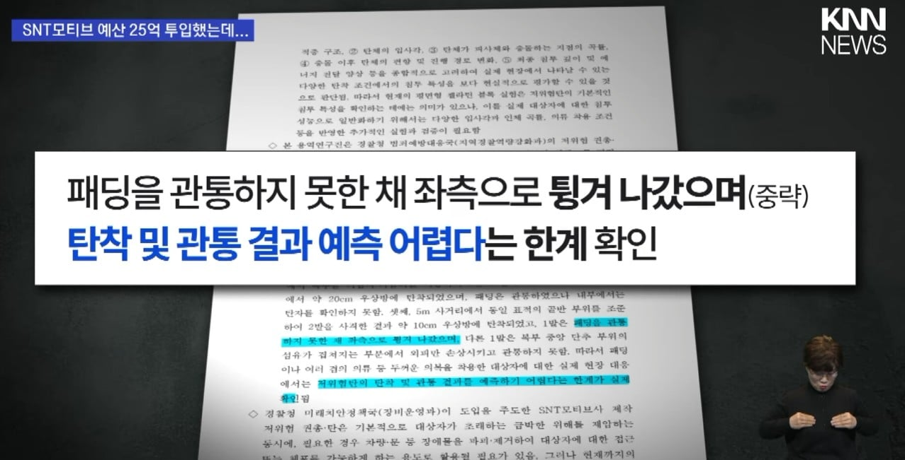
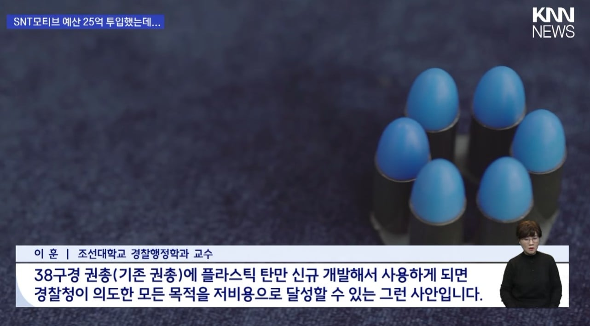
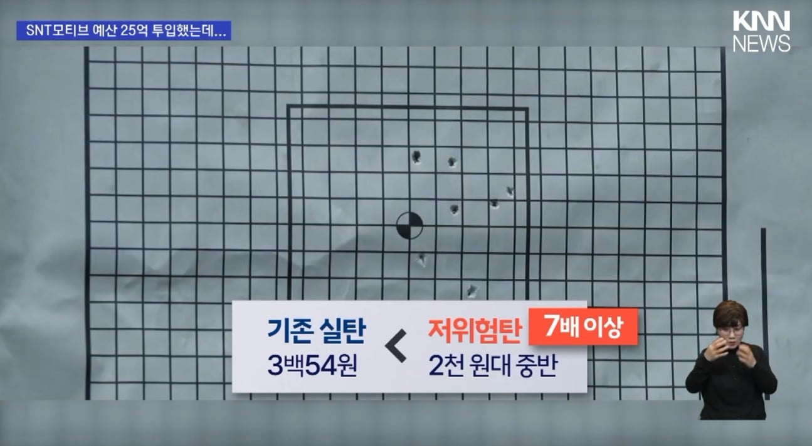

1. 패딩 뚫기 어려울 수 있음
2. 저지력 문제
3. 실탄쏘면 총이 못 버팀
4. 스마트 모듈 취소



1. 패딩 뚫기 어려울 수 있음
2. 저지력 문제
3. 실탄쏘면 총이 못 버팀
4. 스마트 모듈 취소
ㄹㅇㅋㅋㅋㅋㅋㅋㅋㅋ
세금을 꺼어어어억~~~~~
칼들고 달려드는놈에게 걍 뒤지라는뜻
저런거 만들거면 그물총으로 그냥 묶아버리지
총기역사 보면 항상 이런식임. 그래서 아직도 M16 파생형이나 MK5 파생형들이 승승장구하는 거지 뭐
테스트도 안하고 누가 또 거하게 해먹으셨네.